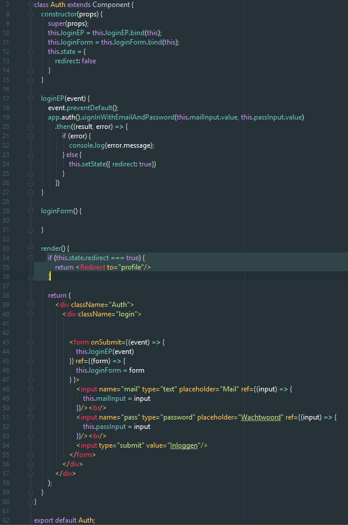
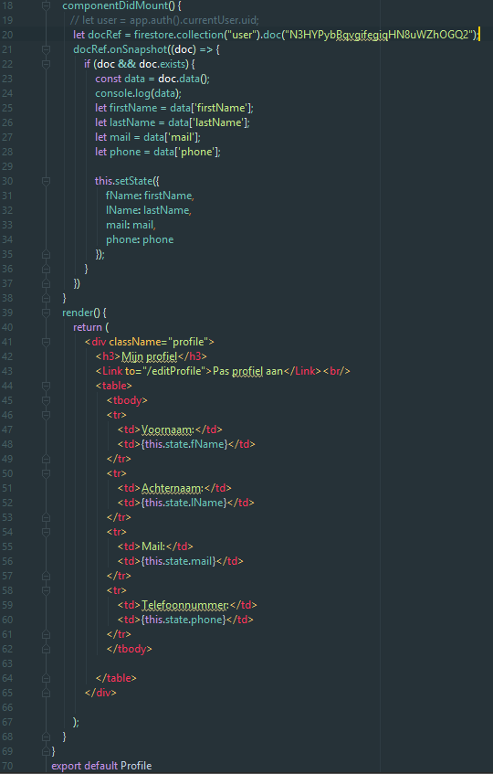
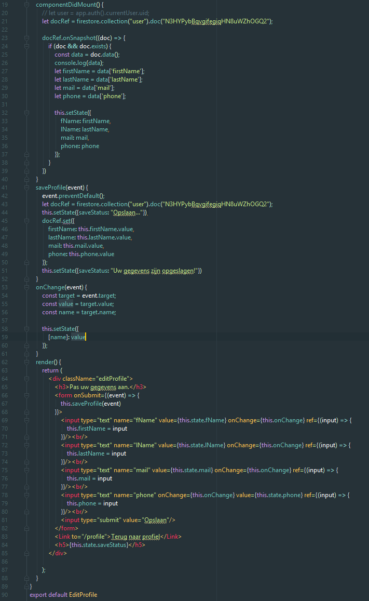

Ik ben voor de Fitness app aan de front-end begonnen door zowel Firebase en React op te zetten. Doordat niemand in onze groep ervaring had met React moest ik de basis van React zelf op internet uitzoeken.
Om te beginnen heb ik eerst een paar basis react tutorials gevolgd. Deze hebben we me al snel genoeg kennis gegeven om een eerste project te gaan ontwikkellen. Nadat ik React had opgezet en Firebase via NPM heb geinstaleerd ben ik een web versie van mijn iPhone app gaan bouwen. Om de app te laten functioneren moest ik een paar componenten maken. Die in App.js samenkwamen. Als eerste was auth.js. Dit component regelt het inloggen.
Om na het inloggen je profiel in te zien heb ik het tweede component aan gemaakt profile.js. Hierin wordt data uit een Firestore DB opgehaald en in een tabel gezet. Als de data extern aangepsat wordt dan wordt de data in de tabel in realtime aangepast. Een probleem wat ik helaas nog niet heb kunnen oplossen is het feit dat de data nog niet gekoppeld is aan het ingelogde profiel.
Om de app compleet te maken heb ik het editProfile.js component gemaakt. Dit component zorgt ervoor dat formdata naar de firestore DB wordt verzonden.
Ik ben voor de beperkte tijd die nog had best tevreden over dit projectje. In de toekomst wil ik dan ook meer met frameworks zoals React, Angular of Vue. Een aantal dingen die nog had willen toevoegen was:
- CSS
- Profiel data gekoppeld aan de ingelogde gebruiker
- Elegantere navigatie